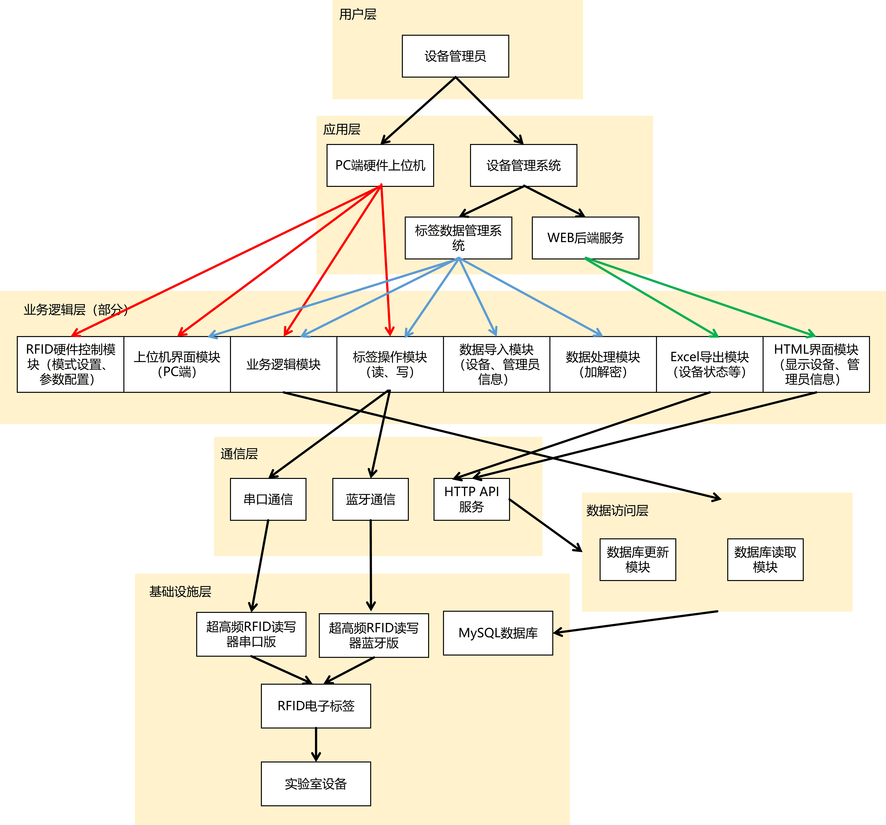
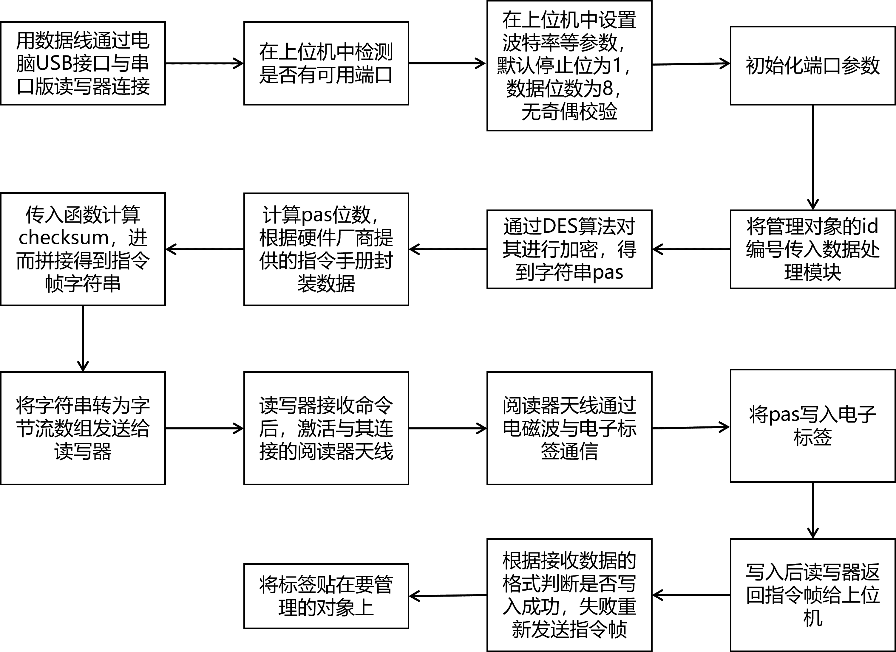
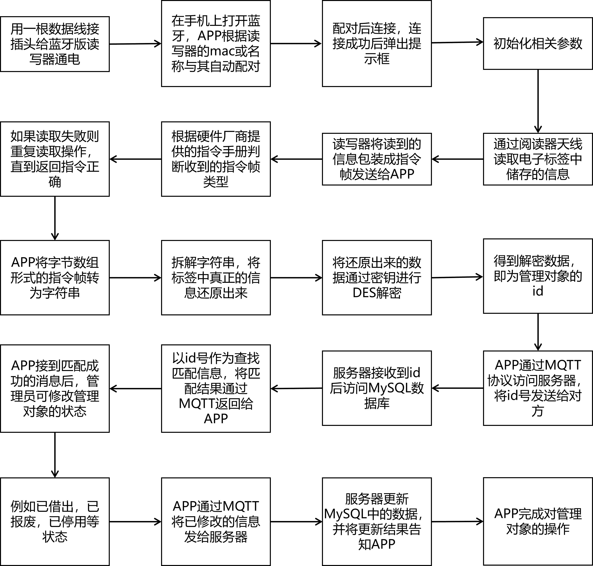
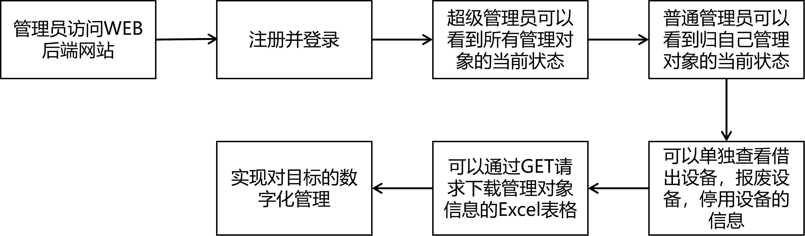
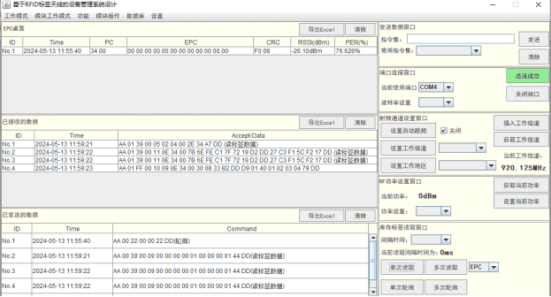
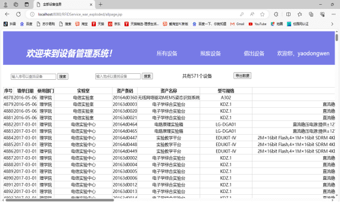

展示模块划分、数据流向与核心服务

使用上位机写入标签操作流程

使用APP读取标签并访问服务器流程

管理员管理对象信息操作流程


package PortProcess;
import java.io.BufferedOutputStream;
import java.io.InputStream;
import java.io.OutputStream;
import java.util.ArrayList;
import java.util.Enumeration;
import java.util.List;
import DataProcess.TagAntennaCommand;
import DataProcess.DataAuxiliaryTool;
import DataProcess.DataInterface;
import GUI.UIQuoteTool;
import gnu.io.CommPortIdentifier;
import gnu.io.SerialPort;
/**
* 此类用于对端口进行各类操作和其中的数据处理
* @author ydw
*
*/
public class PortConnection
{
private List portlist=PortDataInterface.portdata_quote.getportlist();
private SerialPort comport=PortDataInterface.portdata_quote.getPort();
//public static PortConnection instance=new PortConnection();
/**
* 此函数用于检测当前是否存在可以使用的端口，若存在则把检测到的端口加入到portlist中
*/
@SuppressWarnings("unchecked")
public static void get_available_port()
{
Enumeration portlists=CommPortIdentifier.getPortIdentifiers();
List portname=new ArrayList();
while(portlists.hasMoreElements())
{
String port=portlists.nextElement().getName();
portname.add(port);
}
PortDataInterface.portdata_quote.setportlist(portname);
}
/**
* 此函数用于对端口进行数据的初始化，即设置波特率，停止位、数据传送位数、奇偶校验位。默认设置为
* 停止位为1，数据位数为8，无奇偶校验，波特率为传入的参数，传入相应的字符串就可自动得到其整型
* @throws Exception
*/
@SuppressWarnings("unchecked")
public void set_port_attribute() throws Exception
{
if(PortDataInterface.portdata_quote.getPort()!=null)
{
if(DataInterface.instance.getlist_choosebox("portconnectPane_box").get(1).getSelectedItem()==null)
PortDataInterface.portdata_quote.getPort().setSerialPortParams(Integer.parseInt("115200"),
SerialPort.DATABITS_8,SerialPort.STOPBITS_1,SerialPort.PARITY_NONE);
else
PortDataInterface.portdata_quote.getPort().setSerialPortParams
(Integer.parseInt(DataInterface.instance.getlist_choosebox("portconnectPane_box").get(1).getSelectedItem().toString()),
SerialPort.DATABITS_8,SerialPort.STOPBITS_1,SerialPort.PARITY_NONE);
UIQuoteTool.set_message_pane(0, "端口初始化成功！");
}
}
/**
* 此函数用于在端口存在时，与端口进行连接，连接成功时则弹出提示框
* @throws Exception
*/
public void openport() throws Exception
{
if(!PortDataInterface.portdata_quote.getportlist().isEmpty() && comport==null)
{
CommPortIdentifier com=CommPortIdentifier.getPortIdentifier
(PortDataInterface.portdata_quote.getportlist().get(0));
PortDataInterface.portdata_quote.setport((SerialPort)com.open("OpenerAndCloser", 1000));
PortDataInterface.portdata_quote.getPort().addEventListener(new PortEventResponse());
PortDataInterface.portdata_quote.getPort().notifyOnDataAvailable(true);
PortDataInterface.portdata_quote.getPort().notifyOnBreakInterrupt(true);
}
else
UIQuoteTool.set_message_pane(2, "没有检测到可用端口！");
}
/**
* 此函数用于断开与端口之间的通信，若检测不到端口则弹出错误提示框，关闭端口成功后移除可用
* 端口下拉框和波特率设置下拉框中所有的内容，并弹出提示框
* @throws Exception
*/
@SuppressWarnings("unchecked")
public void closeport() throws Exception
{
if(PortDataInterface.portdata_quote.getPort()!=null)
{
PortDataInterface.portdata_quote.getPort().close();
PortDataInterface.portdata_quote.setport(null);
PortDataInterface.portdata_quote.getportlist().clear();
DataInterface.instance.getlist_choosebox("portconnectPane_box").
get(0).removeAllItems();
}
UIQuoteTool.set_message_pane(0, "端口已关闭！");
}
/**
* 此函数用于向端口发送数据，并将传进的字符串参数转换成16进制数后再发送，使用了缓冲流
* 修饰，发送完毕后关闭发送流
* @param str 想要发送的字符串信息
* @throws Exception
*/
public void port_sendmessage(String str) throws Exception
{
DataInterface.instance.setmessage("send_message",str);
new UIQuoteTool().set_table_operation
("add", DataInterface.instance.getlist_table().get(3),DataInterface.tablemaxcount);
new DataAuxiliaryTool().set_showmessagepane_data(DataInterface.tablemaxcount);
if(PortDataInterface.portdata_quote.getPort()!=null)
{
OutputStream ops=new BufferedOutputStream(PortDataInterface.portdata_quote.getPort().getOutputStream());
byte[] bytes=DataAuxiliaryTool.hexstring_to_bytes(str);
ops.write(bytes);
ops.flush();
ops.close();
DataInterface.instance.getcombobox().get(2).setSelected(true);
}
}
/**
* 此函数用于接收端口所发送回来的数据，不可用输入缓冲流来修饰，否则会卡死并抛出异常，
* 接收完毕后会关闭输入流并得到一个字节数组
* @return 返回一个byte[]对象
* @throws Exception
*/
public byte[] port_receivemessage() throws Exception
{
byte[] bytes= null;
if(PortDataInterface.portdata_quote.getPort()!=null)
{
InputStream in=PortDataInterface.portdata_quote.getPort().getInputStream();
int buffernum=in.available();
while(buffernum>0)
{
bytes=new byte[buffernum];
in.read(bytes);
buffernum=in.available();
}
in.close();
}
return bytes;
}
public void sendrevmes(int mode)
{
if(comport!=null)
{
try
{
port_sendmessage(new TagAntennaCommand().get_userarea_mand(mode));
}
catch (Exception e){e.printStackTrace();}
}
else
{
try {
get_available_port();
openport();
set_port_attribute();
port_sendmessage(new TagAntennaCommand().get_userarea_mand(mode));
}
catch (Exception ea){ea.printStackTrace();}
}
}
}
包含用于初始化串口参数，发送和接收串口消息的函数